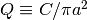
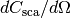

Quick Example¶
A directory containing two example cases, example/, is found in the parent directory of GGADT. In this directory, you will find:
- README
- A small file detailing the contents of the directory
- Parameter files
parameters_total_xs.ini- Parameter file for computing total (abs, sca, ext) cross sections as a function of energy
parameters_diffscat.ini- Parameter file for computing differential scattering cross section as a function of scattering angle.
- Python scripts
plot_total_xs.py- Plots output of GGADT calculations of total cross section
plot_diffscat.py- Plots output of GGADT calculations of differential scattering cross section
- Target files for clusters of spheres
describes the geometry of a cluster of spheres, see [S2003] for more information
BA.256.1.targ- More porous aggregate
BAM2.256.1.targ- Less porous aggregate
| [S2003] | Shen, Y., Draine, B. T., & Johnson, E. T. 2008, ApJ, 689, 260 ads |
Example 1: Total cross sections as a function of energy¶
The first example uses GGADT to compute the total cross sections (i.e. absorption, scattering, extinction) for a particular set of parameters, listed in parameters_total_xs.ini. A more detailed look at the parameter will come a bit later.
To run GGADT with the parameters specified in the parameter file parameters_total_xs.ini, simply do:
$ ../src/ggadt --parameter-file=parameters_total_xs.ini > total_xs.out
This will store the results into the file total_xs.out, which can then be read in by the python script plot_total_xs.py. To plot the results:
$ python plot_total_xs.py total_xs.out
Generating a plot that should look something like this
{kind=link}
Total cross section (example 1)
A more thorough look at the parameter file parameters_total_xs.ini¶
Let’s take a closer look at the parameter file now.
# Geometry of grain
# | one of: 'sphere','spheres' (or 'agglomerate'), or 'ellipsoid'
grain-geometry = 'spheres'
agglom-file = 'BAM2.256.1.targ'
These lines tell GGADT about the kind of object it will be dealing with. By specifying grain-geometry=spheres, we’re saying that the object is a cluster of spheres, and that the cluster is parameterized in the file BAM2.256.1.targ. Without going into too much detail, suffice it to say that this file describes the following object:

The grain parameterized by BAM2.256.1.targ
Let’s move on.
use-efficiencies = T
integrated = T
Here, we’re telling GGADT that we want it to output results in terms of efficiencies, , and that we’re computing the integrated cross sections (and not the differential scattering cross section).
# effective radius (radius of sphere with same volume)
aeff = 0.2
# Number of grid elements (along one dimension) to resolve grain
ngrain = 128
This tells GGADT that the effective radius of the grain  is 0.2 microns, and that it should be represented on a 128 x 128 two-dimensional grid.
is 0.2 microns, and that it should be represented on a 128 x 128 two-dimensional grid.
material-file = "index_silD03"
The material-file argument gives the location of the “index file”: a file specifying the energy-dependent refractive index of the grain material.
dephot = 0.1
ephot-min = 0.1
ephot-max = 5.0
These parameters set the energy range (and the energy resolution) over which the cross sections are computed.
angle-mode = 'random'
# Either 'sequential', 'random' or 'file'
# | tells GGADT how to choose orientations over which to average
# | calculations.
norientations = 64
# If angle-mode is NOT 'file'; number of orientations
# | over which to average calcuations
Here we’re saying that GGADT should average over 64 random orientations of the object.
Example 2: Differential scattering cross section¶
The second example uses GGADT to calculate the differential scattering cross section for a particular object and set of parameters. The parameters_diffscat.ini parameter file is used here.
To run GGADT with the parameters specified in the parameter file parameters_total_xs.ini, simply do:
$ ../src/ggadt --parameter-file=parameters_diffscat.ini > diffscat.out
This will store the results into the file total_xs.out, which can then be read in by the python script plot_total_xs.py. To plot the results:
$ python plot_diffscat.py diffscat.out
Generating a plot that should look something like this
{kind=link}
Differential scattering cross section (example 2)
A more thorough look at the parameter file parameters_diffscat.ini¶
We’ll pick through the differences between parameters_diffscat.ini and parameters_total_xs.ini.
# parameters for differential scattering cross section calculation
# units: keV
ephot = 2.0
# Re(m-1)
# ior-re =-1.920E-4
# Re(m)
# ior-im = 2.807E-5
# |
# | DO NOT define ior-re or ior-im if you also have defined
# | a material-file and 'ephot'. It will pull m(E) automatically.
# |
Here, we do the calculation at one photon energy (i.e. for a single value of the index of refraction,  ). We can either set
). We can either set ior-re and ior-im ourselves, or we can specify a material-file and a photon energy, ephot (in keV). We’ve chosen the latter here.
# number of angles to calculate diff. scat.
# cross section (ntheta) or spacing between them (dtheta)
# (arcseconds) Choose only one of these parameters
dtheta = 25.0
#nscatter = 100
# Maximum angle for which the diff. scat. cross
# section is calculated (arcseconds)
max-angle = 6000.
This tells GGADT that you want to compute  from 0 to 6000 arcseconds, with values spaced every  arcseconds.
arcseconds.